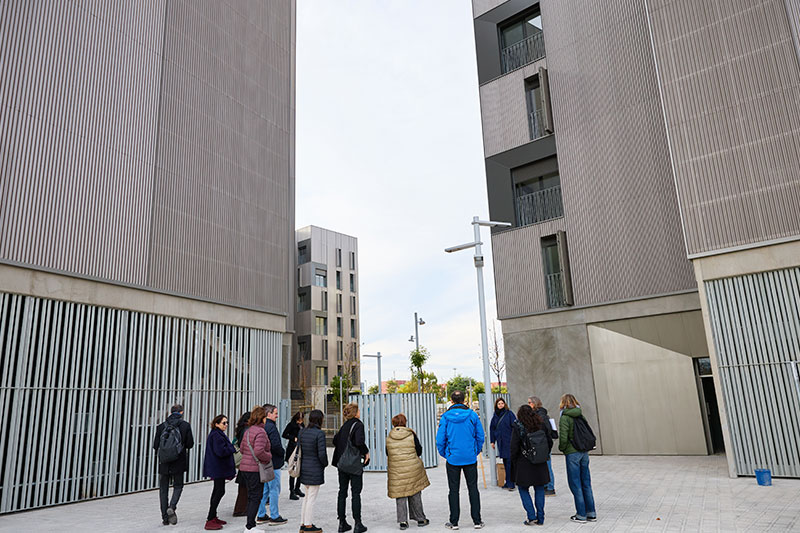

BARCELONA IMPULSA
De la gestión turística a nuevos sectores estratégicos
La desaparición progresiva de las viviendas turísticas comporta la reorientación profesional de las personas que trabajan en ellas.

Pla Viure
Barcelona prepara el fin de las viviendas de uso turístico como una de las medidas para mitigar la presión sobre el alquiler y afrontar la emergencia habitacional, con el objetivo de recuperar 10.000 pisos para uso residencial sin comprometer la actividad económica
En 2028 Barcelona recuperará más de 10.000 viviendas de uso turístico (VUT) para destinarlas a uso residencial. La cifra es relevante por sí sola, más aún por el contexto en el que se inscribe: la ciudad ha sido declarada íntegramente zona de mercado residencial tensado, los precios de los alquileres han puesto contra las cuerdas a miles de familias y el parque público de vivienda, en crecimiento con una previsión de 1.000 nuevos pisos al año, todavía no tiene peso suficiente para corregir la situación.
La no renovación de las licencias de VUT no es una medida aislada ni improvisada. Forma parte de un paquete de políticas de vivienda que incluye el tope de precios del alquiler, la regulación de los alquileres de temporada y el sostenido aumento del parque público mediante la construcción, la rehabilitación y la compra de inmuebles. Todo bajo el paraguas del Pla Viure, la estrategia del gobierno del alcalde Jaume Collboni para afrontar la principal prioridad: garantizar el derecho a seguir viviendo en Barcelona y alcanzar las 15.000 viviendas públicas en el año 2027.
La recuperación de las VUT responde a la necesidad de actuar por todas las vías posibles hasta que el parque público sea suficiente para incidir de forma estructural en el mercado.
La medida que culminará en 2028 se fundamenta en un recorrido legal sólido y avalado por los tribunales. El punto de inflexión llegó con la aprobación del Decreto ley 3/2023, de medidas urgentes sobre el régimen urbanístico de las viviendas de uso turístico, posteriormente convalidado por el Parlament de Catalunya y aplicable a los municipios con mercado residencial tensado.
La norma introduce un cambio sustancial: las viviendas de uso turístico pasan a requerir licencia urbanística previa, con una vigencia limitada a cinco años y supeditada a la compatibilidad con uso residencial y a la disponibilidad de vivienda habitual. Así, Barcelona opta por no renovar las licencias vigentes, con un horizonte fijado en 2028.
El Tribunal Constitucional, en la sentencia 64/2025 de 13 de marzo de 2025, confirma la constitucionalidad del decreto y concluye que la regulación responde a una situación de urgencia vinculada a la proliferación de VUT, sin vulnerar el derecho de propiedad, ya que limita el uso de las viviendas, pero no cuestiona su titularidad.
El tribunal avala también la exigencia de licencia urbanística como instrumento legítimo para proteger el interés general y el modelo de ciudad. Este criterio conecta con la jurisprudencia del Tribunal de Justicia de la Unión Europea, que en el caso Cali Apartments (París) reconoció que las autoridades públicas pueden establecer regímenes de previa autorización y limitaciones a los pisos turísticos en zonas con tensión residencial, siempre que respondan a razones imperiosas de interés general y sean proporcionadas.
Además, el Plan Europeo de Vivienda Asequible establece que la proliferación de VUT contribuye a la crisis de la vivienda en las grandes ciudades y se compromete a desarrollar legislación para hacerle frente.

El mayor impacto de la recuperación de las VUT es en el mercado de la vivienda. Un estudio encargado por el Ayuntamiento al Institut d’Economia de Barcelona (IEB) cuantifica los efectos: el retorno de los 10.000 pisos al mercado residencial tradicional podría reducir los precios del alquiler entre un 8% y un 13,4% y los de compraventa un 6,1%.
En términos absolutos, esto equivale a una reducción de entre 92 y 152 euros mensuales para un piso medio de alquiler y unos 22.400 euros en el precio de compra. El estudio señala que el alquiler es el segmento más sensible a la presencia de viviendas de uso turístico, ya que éstas reducen la oferta disponible.
Estas previsiones refuerzan una tendencia que ya se observa. Desde la entrada en vigor del tope de precios, en marzo de 2024, el precio medio de los nuevos contratos de alquiler ha descendido un 4,9%, según datos de la Secretaria d’Habitatge de la Generalitat. La recuperación de las VUT consolida y profundiza esta corrección.
Uno de los argumentos más recurrentes del sector de los pisos turísticos es la supuesta afectación grave sobre la economía de la ciudad. Los datos disponibles no avalan este diagnóstico. El estudio del IEB estima que la desaparición de los VUT reduciría el PIB de Barcelona en un 0,04%.
Este impacto limitado también se explica por el perfil del sector. A diferencia del conjunto de Catalunya, donde el 78% de los titulares de viviendas de uso turístico son particulares, en Barcelona el modelo presenta una estructura claramente más empresarial. El 57% de los titulares de licencias son empresas o personas jurídicas, a menudo vinculadas a grandes tenedores. Esta concentración relativiza el argumento de un perjuicio generalizado sobre pequeños propietarios y sitúa el debate en términos de regulación de una actividad económica intensiva con efectos directos sobre el acceso a la vivienda.
En una economía diversificada como la barcelonesa, el impacto del 0,04% sobre el PIB es prácticamente imperceptible. Además, la caída de actividad en el comercio o la hostelería se vería compensada por el aumento en otros ámbitos –actividades financieras, inmobiliarias, profesionales o técnicas–, impulsadas por el uso residencial de las viviendas recuperadas. El estudio concluye que los VUT generan un impacto económico neto positivo, aunque de escasa magnitud, especialmente si se compara con los efectos sobre el mercado de la vivienda.
La desaparición progresiva de las viviendas turísticas comporta la reorientación profesional de las personas que trabajan en ellas.
Sobre el empleo, el IEB estima una reducción que representaría una horquilla de entre el 0,35 % y el 1,35 % del total de personas afiliadas en la ciudad. Ante este escenario, el Ayuntamiento ha previsto una respuesta anticipada. Barcelona Activa pondrá en marcha un plan especial para acompañar hasta 8.000 personas con orientación profesional, formación, recalificación, soporte legal y recursos de emprendeduría. El dispositivo funciona como herramienta preventiva y flexible para facilitar transiciones laborales reales.
La recuperación de las VUT no tiene por objetivo limitar el turismo. Barcelona mantiene una amplísima capacidad de alojamiento: más de 82.000 plazas hoteleras en la ciudad y más de 146.000 en el área metropolitana, según datos del Idescat. A esto se añade el potencial de crecimiento previsto en el Plan especial urbanístico de alojamientos turísticos (PEUAT), que regula la implantación de establecimientos de alojamiento turístico, y prevé incorporar 5.000 nuevas plazas en Barcelona y 15.000 en el área metropolitana.
"Implica priorizar los usos residenciales frente a aquellos que no garantizan el derecho a la vivienda. Ante la urgencia, no se busca señalar a culpables de la crisis; la ciudad necesita estas viviendas para garantizar el derecho a vivir en ellas."
"Como no disponemos del suelo necesario para responder a la emergencia habitacional, solo podemos construir vivienda protegida. El deber de las administraciones es movilizar todos los recursos y competencias legales para facilitar el uso residencial de la vivienda."
"Debemos movilizar todos los recursos para favorecer el uso residencial y el acceso a la vivienda. La recuperación de las VUT para uso residencial es una medida más que, con la agilización de suelo, construcción o rehabilitación, quiere lograr este objetivo."
La ciudad ha demostrado su capacidad para albergar grandes eventos internacionales, como el ISE, celebrado recientemente, Alimentaria o el MWC, que se celebran en marzo, donde la mayoría de los congresistas se alojan en hoteles. La desaparición de las VUT tampoco pone en riesgo este modelo.
El debate, aparte de la necesidad de recuperar viviendas para los barceloneses y barcelonesas, también está relacionado con los perjuicios que los VUT ocasionan en la convivencia. Según la Encuesta de percepción del turismo 2024, el 63,7% de la población cree que estas viviendas turísticas generan muchas o bastantes molestias, y uno de cada cuatro residentes percibe un exceso de VUT en su barrio.
Movilizar 10.000 viviendas para uso residencial supone recuperar un volumen de pisos equivalente a la capacidad de producción de vivienda pública del Ayuntamiento durante diez años, y que aspira a alojar hasta 25.000 barceloneses y barcelonesas.